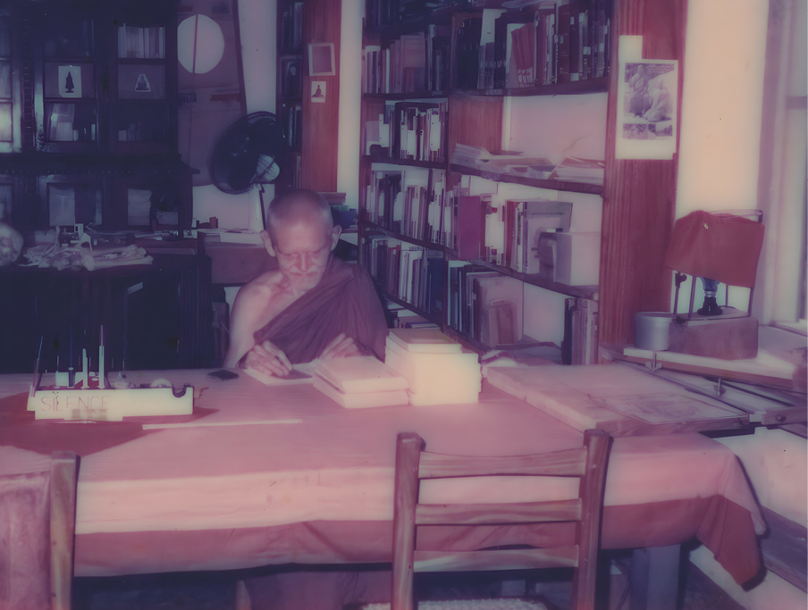

Chapter 01
Avoid Every Bondage With the World
(February 1994 – April 1994)
Polgasduwa Island Hermitage
16 February 1994
x Read the Word of the Buddha [by Venerable Nyanatiloka Mahāthera].6
x Advice to Rāhula (three ways of conduct [tīṇi sucaritāni])—Ambalaṭṭhikārāhulovāda Sutta (MN61; advice to Rāhula at Ambalaṭṭhikā).7
x Study the verses in Dhammapada (Dhp; verses of the Dhamma).
18 February 1994
x When practicing the three ways of conduct,8 whatever was unwholesome should be tackled individually in order to overcome them completely.
x Read Khandhasaṁyutta (SN22; connected discourses on the aggregates) and Saḷāyatanasaṁyutta (SN35; connected discourses on the six sense bases).9 Especially on the burden—Bhāra Sutta (SN22.22; the burden).
x Read Satipaṭṭhāna Sutta carefully and practice it.10
x Read and practice mettā bhāvanā as instructed in the book written by Venerable Ñāṇamoli Thera [The Practice of Loving-Kindness].
20 February 1994
x Refer Vatthūpama Sutta (MN7; the simile of the cloth), Sallekha Sutta (MN8; effacement), Sammādiṭṭhi Sutta (MN9; right view).
x Refer Saṁyutta Nikāya regarding sayings on the incalculable beginning Anamataggasaṁyutta (SN15; connected discourses on without discoverable beginning).
22 February 1994
x Refer Saḷāyatanavibhanga Sutta (MN137; the exposition of the sixfold base).
23 February 1994
x Refer Saḷāyatanasaṁyutta (SN35; connected discourses on the six sense bases).11
9 March 1994
x When bhāvanā (samatha), Sleepiness = Not a good time for Samatha. To overcome it, refer to the discourse given to the great Moggallāna—Pacalāyamāna Sutta (AN7.61; dozing). Rubbing the ears, looking at the sky etc. or do some kind of alternative activity.12
x Too much upekkhā (equanimity) makes you slack in progress—viriya (energy/effort) is necessary.
x Like this you have to balance everything.
x To have a good foundation to continue this practice in every activity and all one’s life, one must establish oneself in the three ways of conduct, mindfully reflecting in three stages.
x Read some Suttas from Majjhima Nikāya (MN; the middle-length discourses), Aṅguttara Nikāya (AN; the numerical discourses).
x When on retreats, be careful of attachment to food and sleep.
13 March 1994
x Meghiya Sutta (AN9.3; Meghiya)
x Upāli Sutta (MN56; to Upāli)
x Sammādiṭṭhi Sutta (MN9; right view)
x Ānāpānasati Sutta (MN118; mindfulness of breathing)
x Mahāsatipaṭṭhāna Sutta (DN22; the greater discourse on the foundations of mindfulness)
x Kāyagatāsati Sutta (MN119; mindfulness of the body)
x Udāna (Ud; inspired utterances)
x Sutta Nipāta (Snp; the collection of discourses)
x Thera Gāthā (Thag; verses of the elder monks)
x Wait for some time, you will have more understanding and become more mature (regarding marriage).
16 March 1994
x Majjhima 7, 8, 9, 10—Vatthūpama Sutta (MN7; the simile of the cloth), Sallekha Sutta (MN8; effacement), Sammādiṭṭhi Sutta (MN9; right view), Satipaṭṭhāna Sutta (MN10; the foundations of mindfulness).13
x This is the process in Satipaṭṭhāna Dhammānupassanā (perceiving impermanence, one breathes in and out, noting and reflecting the impermanence of the breath itself).
x The breath that is sent in, is sent out. Like food when it is sent in, it is sent out. In this circumstance, it is unpleasant, but in the case of breath, it is not.
x Look at things perceived mentally as or consider them in the same manner as when considering with the five senses and build up equanimity.14
x Whenever there is disturbance, one must see the causes of those disturbances. You must remove the causes. The disturbance could be external and internal.
x First of all, a good foundation should be laid down with regard to the three ways of conduct.
x These things we have seen before. (Referring to what was sensed at the time).
x Must try to find the way of Removal in the Suttas as advised by the Buddha if possible.15
x When meditating pleasant peaceful feelings arise.
x When one tries to get the experience again, it might not come. Therefore, always see them and must see everything with equanimity.
x Always it must be a pleasant abiding. Nothing should disturb. Seeing everything as impermanent.
21 March 1994
x Read the Dhammapada verses. The ones that strike you, learn them by heart.
x Never be upset. Regard everything as impermanent, not yours.
x Try to avoid every bondage with the world and to be free from any actions that are akusala (unwholesome).
x Jhāna (meditative absorption) is an opening for [Dhamma] vision.16
x When there are disturbances, go one step below. Read the Suttas.
x Don’t delay. Make use of the situation. A letter might come, or maybe sickness, or maybe an outside condition that might make you leave.
x Fasting is good [from] time to time to get rid of cravings for food. It is good to avoid certain foods that are attractive. Fast one day and eat one day. Fast two days and eat two days. Fast three days and eat three days. Fast four days and eat four days... five days and so on.
x This will be helpful, especially when one is going on piṇḍapāta (alms round). Sometimes you might not get any food.
x “Ah happy do we live, we who have no impediments. Feeders of joy shall we be even as the gods of the Radiant Realm” (Dhp 200).
x When drowsiness comes, use one of the techniques said to Mahā Moggallāna—Pacalāyamāna Sutta (AN7.61; dozing).
x Avoid everything that increases lobha, dosa and moha because it will bring suffering. Do the things that will reduce lobha (greed), dosa (hate) and moha (delusion); it will bring happiness.
x Always, the world is there to attract you.
x As a layperson, it is a must to observe sīla on poya days.17 Time to time it is good to retire for a couple of days.
x Due to kamma one would get a teacher. Some teachers would tell you to read the Suttas, learn Pāli. That is if you
decide to be a monk. But make sure you do not take any decision without the liking of your father.18
x The things that disturb—these things will be there throughout life. They are kamma. Surely, we have done akusala kamma (unwholesome actions) before. What you must do is direct the mind slowly in that given condition to turn towards the goal. You have to consider.
x If one doesn’t have great understanding, one must think [of] how one has endlessly roamed in saṁsāra (the cycle of suffering and rebirth). See Anamataggasaṁyutta (SN15; connected discourses on without discoverable beginning). In order to refrain and arouse great energy to practice on the path, in whatever condition however unsuitable it may be. Never to deviate from the path, always sticking to it. Seeing the danger.
x Always, suitable conditions would not remain. That will be the situation throughout life.
x Dhammapada (Dhp; verses of the Dhamma)—there is advice in it for all situations.
x Surely, we would not last. These Aranyas would vanish. The buildings, all these things are artificial. The sāsana is declining.19
24 March 1994
x When unwholesome thoughts arise, try to subdue them mentally. [For] example: by asubha saññā [perception of foul nature], or, if it doesn’t work, try reading the Dhammapada and practice to remove the cause of this. Generally, it is due to ignorance, things that are impermanent, and [that] which are not yours.
x Say you were a businessman, and that you did your business rightly and justly, [at the moment of death] for [next] birth to take place consciousness is required.20 When his body becomes old and when it comes to its end, it cannot continue. It needs another body to continue; therefore, it is born where necessary conditions would be available (a family that would give necessary encouragement and he will grow up to do business). Consciousness needs an object to arise.
x If one makes an effort and rises to a certain sphere, one would experience the object in that sphere. The effort you make is kamma.
x Your object of meditation is the presently arisen consciousness and the components constituting that framework, that is past kamma.21
x At the moment of lokuttara sammā-diṭṭhi [supramundane right view], when nibbāna [the unconditioned; the cessation of greed, hatred, and delusion] is an object, one firmly establishes in past formation.22
x Read Sammādiṭṭhi Sutta (MN9; right view).
28 March 1994
x For the mental factors to arise, this body comes to be, with its unique nature and functions, such as the in-and-out breathing etc.
x Must not expect any vision of Dhamma but just create the conditions like sīla (virtue) and so on. Know that every perception even of Dhamma is impermanent, sticking to nothing that is connected to impermanent elements.
x If something or an activity is unpleasant, look at it as impermanent, not yours, and due to kamma, Do not be displeased.
x In and out breathing, and the perception arising due to the mind-element [are] processes taking place due to our past kamma. The body and body processes have come to be, the way it is, based on past craving and ignorance.
x And one cannot delight in the breath for it is impermanent and it is not yours.
Vegetarianism:
x Everything that takes place in this world entails killing. Even the cultivation of rice. When the field is ploughed, what is prepared you eat, making sure there is no intention for something to be killed. The best way is to follow the path that will make the stopping of the arising of the body that needs to be fed is given more emphasis. Rather than being defiled by pride or a certain craving for the idea of a better world that all people will stop killing animals. But it is only a small amount that is killed by human beings compared to other factors that destroy life.
Regarding the Suttas:
x Majjhima 9, 10—Sammādiṭṭhi Sutta (MN9; right view), Satipaṭṭhāna Sutta (MN10; the foundations of mindfulness).
x First, perceiving impermanence and then where there is no craving, there is no new clinging, becoming, birth, old age and death. Paṭiccasamuppāda (dependent origination).
x Angulimāla, though he has killed so many people, he has previously cultivated the faculties required for Arahantship—Angulimāla Sutta (MN86; on Angulimāla).
x Everything is conditioned.
x Musn't try to reason out things that are said to be
unthinkable by the Buddha, for example how kamma
vipāka (the fruition of actions) takes place, the jhāna etc.
x Must stick to facts.
1 April 1994
x Read Majjhima 13, 14—“quite good”—Mahādukkhakkhandha Sutta (MN13; the greater discourse on the mass of
suffering), Cūḷadukkhakkhandha Sutta (MN14; the shorter discourse on the mass of suffering).
x Read Majjhima 117 too—Mahācattārīsaka Sutta (MN117; the great forty).
x If there are any disturbances from outside, you remove them in a way that you have nothing to regret. Read Sammādiṭṭhi Sutta (MN9; right view) again and again.
x Establish yourself in the three ways of conduct so that at the end of the day, when you reflect, you have nothing to regret.
x Keep in mind all the time, the four factors: noble friend, reading the Suttas etc.23—Sotāpattiphala Sutta (SN55.55; the fruit of stream-entry).
x Make a firm determination to stick to the word of the Buddha always.
x Aversion arises because there is a lot of attachment.
x Memories that arise [are] connected to the sensual world.[Personal Note:] I have to go back and make a basis (exams and subsequent employment) in the world of the senses.24
7 April 1994
x Vath Pirith Potha—Maharagama [The Mirror of the Dhamma compiled by Ven. Nārada and Ven. Kassapa].
x Sutta Nipāta, Vijaya Sutta (Snp1.11; victory).
x Stick to the facts. See things as they are. Bring the mind under control. When meditating on the breath, if the mind strays to any object, know that it should be brought back to the breath. The senses delight in and search for happiness generally. In general life, we avoid unpleasant things and get attached to pleasant things, this is done even in meditational experience. So, you must always stick to Satipaṭṭhāna [the foundation of mindfulness].
x Generally, we see the body as pleasant, which is an illusion. The actual perception is impurities.
x Sexual urges should not be suppressed, but by constantly perceiving the impurities of the body, must make the urge subside.
x Must take all sounds, even mental sounds as distractions and must stick to things as they are: the breath. Must stick to facts.
x Must concentrate on the in breath and out breath. The whole body means the whole body of breath. Calming the body means calming the process of breath.
x We are always either living in the future or in the past.
x Must stick to the present situation and investigate and see the situation as it is or the reality of it.
x When practicing mindfulness of breathing, at that time when certain feelings arise, observe them carefully, see things as they are, and investigate how they arise; the senses. Thoroughly reflect [on] their impermanence, the nature of not belonging to you.
12 April 1994
x Taking part in Sinhalese New Year is only a convention. It is better to spend that time striving on the path and that merit could be transferred to relatives. For the wishes of the people who are pure and striving resolutely on the path are effective.
x Maintaining equanimity is very important, and developing and cultivating it, so that there is no more forming or constr-
ucting of rise and fall, [due to] intentions, efforts and craving.
x Commentaries are useful; the Suttas that strike you very much, go through them again and again. But all of them have the same principle.
x Must do what your parents say so that you would not have remorse later.
x Not mentally expecting any particular vision or something. It is continuously observing the real situation—Satipaṭṭhāna.
x When you are in retreat, you must continuously try to keep your mind not wandering by sticking to the object of meditation or [as] second-best thing, reading the Suttas. Of course, you have to keep this body clean and the dwelling, the surroundings [clean]. You may attend to these things with full attention, mindfully as to what you are doing. When finished doing the job, one may come and sit down to meditate and reflect carefully of the memory of the last work done, and there is no disturbance, then one must think of something or recite which will calm oneself quickly, that one has to know, after that one can rest the mind on the object of meditation e.g. breath etc. (breath also one should not imagine but should grasp what actually is).
x In the beginning it is natural to conceptualize.
18 April 1994
x [Quote from Ven. Ñāṇavimala] I also had a migraine; it was there for some time. To overcome it, I started yoga, and became a vegetarian. Nothing worked, but when I entered the Saṅgha, when I looked at it from the point of view of Dhamma, it all vanished. There is past kamma. Have you read anything of Cayce? [Edgar Cayce].25 In a dream, it was (consciousness). I got to know the cause of my migraine. I was a soldier in the army. I had inflicted pain. Then I knew the cause.26
x So don’t worry about these things. Any illness or pain, don’t try to overcome it by this action or that which is Sīlabbata-parāmāsa [clinging to mere rules and rituals]. Avoid that which increases it (whatever that is unpleasant). Practice of Satipaṭṭhāna is very effective. Maintain equanimity, let that kamma pass on. When that past kamma is finished, the pain will also be over.
x Look at the body as if from outside—the perceptions, consciousness and feelings and see them as not yours and therefore maintain equanimity.
x Keep the mind detached, don’t let the mind be defiled by the pain. Make sure you do not act in the present in such a way that pain will arise in the future. Make sure all unwholesome activity is avoided.
x Try to live as minimally as possible.
x Think how the Pacceka Buddhas lived and died at Isigili—Isigili Sutta (MN116; Isigili: the gullet of the seers). You will show the highest gratitude by practice.
x Get established in Satipaṭṭhāna.
x Don’t have any hopes or wishes. Try to cut down any bondage with the world of the senses. Be detached from the past, the future and the present.
x When faced with the world, when one restrains and controls, and maintains a certain level of detachment or equanimity, that is kamma and it will bear its fruits in due course of time. Food should be taken as medicine.
21 April 1994
x For the sāsana to last long and prosper, the best service you could [administer] is to yourself, properly make an endeavor to establish oneself in the proper Dhamma.
x But if you try to change or get involved in changing the present situation, either the Bodhi pūjās [worshiping the Bodhi tree] or the conduct of the bhikkhus, even what is left will disappear. So be careful, do your own practice in accordance with the word of the Buddha, but don’t encourage or assist the wrong practices, in any circumstance. It is like swallowing red hot iron balls (using money as a bhikkhu etc.)—[Aggikkhandhopama Sutta (AN7.72; fire)]
x When you go to different established places you should compromise according to their rules and regulations, but you must see that they are in accordance with the word of the Buddha.
x You must observe this (piṇḍapāta) with Right View (sammā-diṭṭhi).
x It is alright if you go on piṇḍapāta taking the 8 precepts with the white overall. It is good to go to a solitary place on a full moon day and observe [precepts]. It is good if circumstances permit, to observe 8 precepts on the other 4 Poyas [Uposatha days]. Failing that, choose the Sunday closest to the Poya or whenever there are holidays.
x Everyday, you must do things carefully so that, when you reflect in the night, you have nothing to regret in regard to the three ways of conduct.
x When the mind is restless, you may read particular Suttas that struck you. You may read them over again and again. You may study and memorise the verses in Dhammapada, that particularly interest you.
x Milindapañha (Questions of King Milinda):27 it is alright if you read them but accept the ones that are in accordance with the Sutta and Vinaya piṭaka.
x So always stick to the Suttas.
x The higher rules are there to arouse the jhāna (meditative absorption). The minor rules are not necessary. But when one is directed to purifying the three ways of conduct, then the rules are automatically observed.
x You may continue not to eat after 12 o’clock. If it affects the health or if you are involved in a lot of work you may eat something small (milk or 2 slices of bread). But on Poya days, milk is also not permitted, water or tea etc. [can be consumed instead].
27 April 1994
x Don’t let the Dhamma seed that you have planted be destroyed. The seed that you have planted, the tree that you have grown—you must look after it, protect it, water it, and tend to it carefully so that it will grow, flourish, and come to full growth with flowers and fruit.
x Like a sailor when crossing a river, slowly, not losing the other shore, direct the boat slowly, gradually cutting the stream. Similarly, you should direct your life.
x Read Sutta No. 2 of Majjhima Nikāya—Sabbāsava Sutta (MN2; all the taints).
30 April 1994
x Always make sure to purify the mind.
x Purified mind brings purified action.
x The [Bodhisatta] left everything, settled to purify himself and [as the Buddha] served all beings in the highest.
x Though we are separate we will be united in mind.28
x Avoid akusala [unwholesome deeds] even if you have to go through hardship.
x Do things slowly, carefully and mindfully and always watch the three ways of conduct and just wait.
x Do mettā bhāvanā [loving-kindness meditation] and do a bit of Ānāpānasati [mindfulness of breathing].
x Be an example to others. It is a skill, the way one directs everything towards Dhamma.
x [Like] Nakulamātā and Nakulapitā [who were regarded by the Buddha as exemplary householder disciples].
x Direct the others in the highest—wish them the highest.
x “Abhivādanasīlissa, niccaṁ vuḍḍhāpacāyino cattāro dhammā vaḍḍhanti, āyu vaṇṇo sukhaṁ balaṁ (Dhp 109).
sukhaṁ niddukkhā nirogyā nibbāna paccayā”
All blessings.
[“For one who is respectful and always honors their elders, four things increase: life, beauty, happiness, and strength.
True happiness is that which is free from suffering, free from sickness, and has Nibbāna (liberation) as its foundation.”—A traditional blessing commonly recited by monks at the end of a discourse]
6 The Word of the Buddha: An Outline of the Buddha in the Words of the Pāli Canon—Compiled, translated and explained by Ven. Nyanatiloka Mahāthera.
7 In the original notes, this discourse is referred to simply as Rāhulovāda Sutta, though its full title is Ambalaṭṭhikārāhulovāda Sutta (MN61; advice to Rāhula at Ambalaṭṭhikā).
8 This practice is the reflection on bodily, verbal, and mental actions—before, during, and after they occur. It is a foundational practice that should be done at all times.
9 Primary focus should be given to the Khandhasaṁyutta section (SN22; connected discourses on the aggregates). The Buddha analyzes the five aggregates—form, feeling, perception, volitional formations, and consciousness—as the aggregates subject to clinging, showing them to be impermanent, suffering, and not-self.
10 The Satipaṭṭhāna Sutta (Discourse on the Foundations of Mindfulness) is a foundational discourse of the Buddha, considered essential for the development of insight and the attainment of Nibbāna (Final Liberation). It lays out the four objects for the practice of Satipaṭṭhāna: mindfulness of the body, feelings, mind, and mental objects. The two main canonical versions are the shorter Satipaṭṭhāna Sutta (MN10; the foundations of mindfulness) and the longer Mahāsatipaṭṭhāna Sutta (DN22; the greater discourse on the foundations of mindfulness)
11 Primary focus should be given to the Saḷāyatanasaṁyutta section (SN35; connected discourses on the six sense bases). The Buddha analyzes the eye, ear, nose, tongue, body, mind and their objects—as the domain where contact conditions feeling and craving. He teaches guarding the sense faculties and seeing impermanence, suffering, and not-self in relation to the six sense bases.
12 Samatha (calm abiding) meditation stills and steadies the mind. But when drowsiness intrudes, the Buddha advised the monk Mahā-Moggallāna to: change the object of meditation, recite/reflect on Dhamma, rouse the body (rub the ears/limbs), wash the face and open the gaze, focus on perception of light, walk; if needed, lie down briefly. He later became a chief disciple, foremost in psychic powers.
13 Ven. Ñāṇavimala gave directions in the briefest form: “Majjhima [number]” names the discourse in the Majjhima Nikāya and, when several are given, the order to follow. The sequence “7, 8, 9, 10” is a compact progressive training: (MN7) begins by
cleansing the mind’s stains; (MN8) guides the effacement of defilements; (MN9) establishes right view as the framework; (MN10) sets out the direct path of mindfulness to be cultivated throughout.
14 Ven. Gnanaloka clarifies: “Mentally” refers to experiences arising in meditation (e.g. visions). Regard them like sense-objects: observe without assigning value or taking them up, and see their impermanence.
15 Ven. Gnanaloka clarifies, this is referring to removing the mental defilements (āsavas), by the approaches described in the Suttas. This requires a certain degree of knowledge of the Suttas.
16 Jhāna provides the clarity and steadiness of mind through which the Dhamma is directly seen. This seeing is not conceptual knowledge but insight born of experience.
17 In Sri Lanka, a Poya day is the full-moon Uposatha observance. Lay Buddhists typically visit the temple or a forest monastery (often in white) and “take sīla” for the day—usually the Eight Precepts. This long-standing lay observance deepens study, meditation, and lay-monastic reciprocity.
18 Ven. Gnanaloka clarifies this refers to gaining approval from his father, but being sensitive to how he is feeling as well, not just about getting formal approval.
19 Aranya refers to forest hermitages. Sāsana denotes the Buddha’s dispensation—the Dhamma and Vinaya as lived and handed on. The statement points not merely to the inevitable impermanence of physical structures, but more profoundly, to the weakening of practice, study, and virtue.
20 Refer to Reflection 08 for detailed elaboration.
21 Ven. Gnanaloka notes this line is a personal note—an over-explanation of Ven. Ñāṇavimala’s teaching. “Presently arisen consciousness and components” should be read as the immediate field of experience—e.g., the breath together with contact, feeling, perception, and volitional formations—as observed as they arise and pass.
22 Ven. Gnanaloka notes this sentence is a personal note—an over-explanation of Ven. Ñāṇavimala’s teaching. In the context of lokuttara sammā-diṭṭhi, when Nibbāna is the object, “past formation” should be understood as the bodily formation (kāya-saṅkhāra)—i.e., the last breath occurring as a result of past kamma. [For further context, see Reflection 08.]
23 As mentioned in the Sotāpattiphala Sutta, to reach the first stage of awakening (stream-entry), the “four factors” to keep in mind are noble friendship (kalyāṇa-mitta), hearing the true Dhamma (saddhamma-savana), wise attention (yoniso manasikāra), and practice in accordance with the Dhamma (dhammānudhamma-paṭipatti).
24 A personal note by Shanaka—reminder of the tug between retreat and lay duty: once outside the forest monastery, he would have to resume study and, in time, work—engagements rooted in the sensory world.
25 Edgar Cayce (1877–1945) was a well-known American psychic who gave trance readings that purported to reveal individuals’ past lives. The book Many Mansions (1952) by Gina Cerminara documents Cayce’s work on kamma and reincarnation as a cause for present-life conditions.
26 Ven. Ñāṇavimala related that, with a developed Satipaṭṭhāna practice, recollections of past lives began to occur. One such recollection revealed the origin of his lifelong migraines: in a former life during the time of the Roman Empire he had been a Germanic soldier fighting Romans in a Germanic village. A short Roman soldier approached, and he struck this Roman soldier on the head with a club, killing him. He noted his own unwholesome act. Following this insight on kamma, the migraines subsided. As an additional comment, Ven. Ñāṇavimala would stress the importance of grounding oneself in Satipaṭṭhāna (mindfulness), stating that the practice provides the necessary mental balance to confront often overwhelming past life recollections. ‘It was (consciousness)’ refers to Ven. Ñāṇavimala regarding these experiences as that of the working of consciousness.
27 Composed around the beginning of the Common Era, and of unknown authorship, the Milindapañha is set up as a compilation of questions posed by the Indo-Greek King Milinda (identified as King Menander of Bactria) to a revered senior monk named Nāgasena. It is widely revered for its clear analogies and probing treatment of issues like self/no-self, kamma, and rebirth—an early meeting of Hellenistic and Buddhist thought.
28 Ven. Gnanaloka states that Ven. Ñāṇavimala would sometimes say this when Shanaka was leaving his kuṭi or was returning to Colombo. Ven. Ñāṇavimala used this statement to emphasize that spiritual unity is solely determined by mental purity, not physical proximity. For instance, the Buddha could see a sincere seeker practicing in the distance, whereas a person full of defilements (kilesas) is far away, even if they are touching the Buddha’s robe.
Polgasduwa Island Hermitage (circa 1990s)

Ven. Ñāṇavimala Mahāthera reading in the library at
Polgasduwa Island Hermitage (circa 1990s).